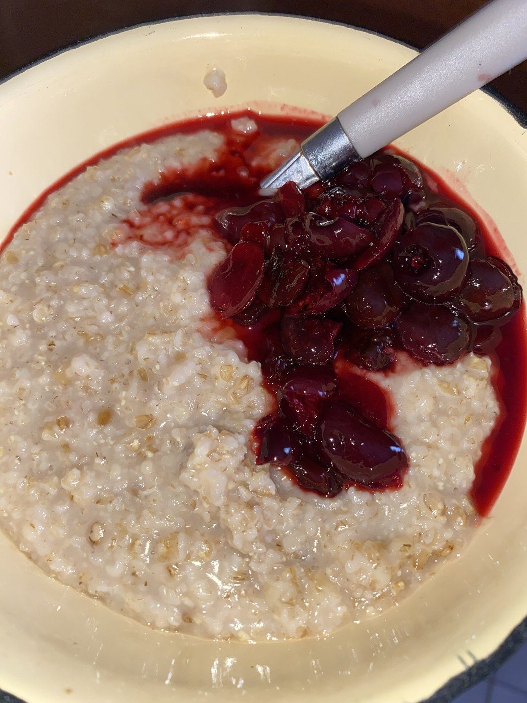
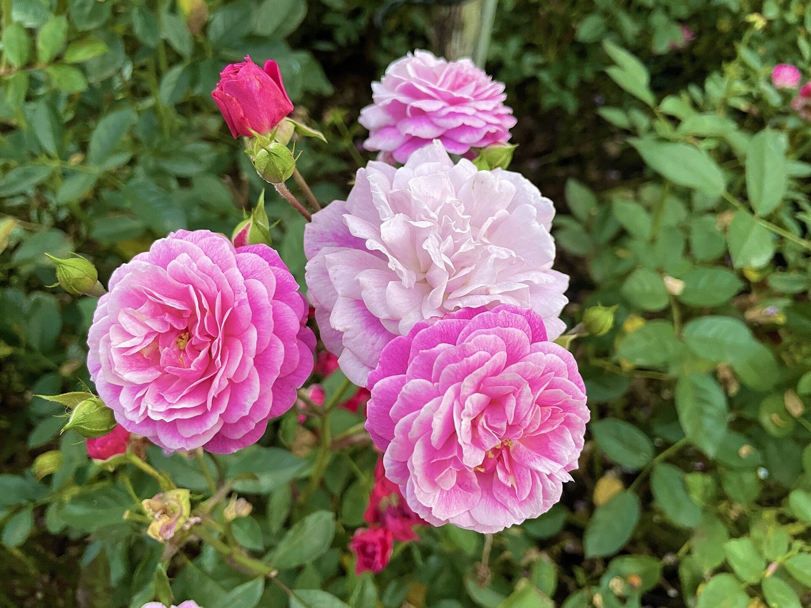

制作側の連想
回し車の部位を、配置図にしてみる
回し車の部位を図にしたもので、制作側の連想です。お店の理念・由来とは無関係で、実際の製品の仕様を示すものでもありません。 六つの部位に番号をふり、上の図と並べています。
凡例
六つの部位
- 1走行面(トラック)輪の外周にあたる帯状の部分で、回転するときに下へ踏まれて動く面。
- 2横桟(ラダー)走行面を横切って等間隔に並ぶ細い棒で、足がかりになる。
- 3側板輪の側面をふさぐ円盤で、走行面と横桟をひとつの輪に保つ。
- 4軸受(ハブ)輪の中心にある回転の軸で、輪はここを中心に回る。
- 5支柱(スタンド)軸受を支えて、輪を台座の上に立てている二本の脚。
- 6台座(ベース)全体を受ける平らな土台で、支柱の下端がつながる。
写真(イメージ)
写真(イメージ)





写真はイメージです。お店のものではありません。
ご案内
お店のこと(確認できたものだけ)
| 所在地 | 〒426-0015 静岡県藤枝市五十海１丁目４−７ |
|---|---|
| 電話 | 準備中 |
| 営業時間 | 準備中 |
| 定休日 | 準備中 |
| ご予約 | 準備中 |
| 駐車場 | 準備中 |
| SNS | Instagram @cheese.omelet.piraf |